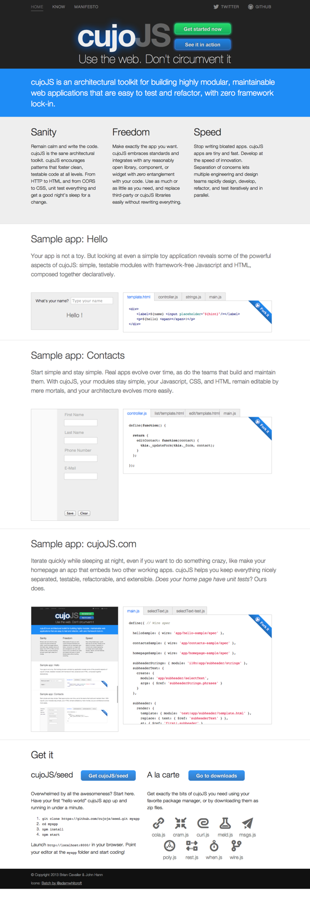

Sanity
Remain calm and write the code. cujoJS is the sane architectural toolkit. cujoJS encourages patterns that foster clean, testable code at all levels. From HTTP to HTML and from CORS to CSS, unit test everything and get a good night’s sleep for a change.
Freedom
Make exactly the app you want. cujoJS embraces standards and integrates with any reasonably open library, component, or widget with zero entanglement with your code. Use as much or as little as you need, and replace third-party or cujoJS libraries easily without rewriting everything.
Speed
Stop writing bloated apps. cujoJS apps are tiny and fast. Develop at the speed of innovation. Separation of concerns lets multiple engineering and design teams rapidly design, develop, refactor, and test iteratively and in parallel.
Sample app: Hello
Your app is not a toy. But looking at even a simple toy application reveals some of the powerful aspects of cujoJS: simple, testable modules with framework-free Javascript and HTML, composed together declaratively.
Start simple and stay simple. Real apps evolve over time, as do the teams that build and maintain them. With cujoJS, your modules stay simple, your Javascript, CSS, and HTML remain editable by mere mortals, and your architecture evolves more easily.
Sample app: cujoJS.com
Iterate quickly while sleeping at night, even if you want to do something crazy, like make your homepage an app that embeds two other working apps. cujoJS helps you keep everything nicely separated, testable, refactorable, and extensible. Does your home page have unit tests? Ours does.
